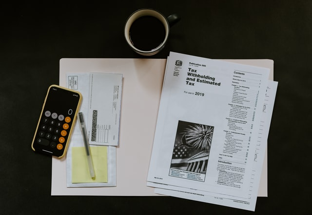

1.언스플래쉬는 저작권에 구애받지 않고 사용할 수 있는 사진들이 있는 사이트. 하이퍼링크는 anchor hyperlink reference의 약자를 사용해서 태그함
2.사진 삽입하는 방법

3.tag를 상세히 서술해주는 주황색과 초록색 언어를 attribute(속성)라고 함
4. ul 부모 태그와 li 자식 태그 사용법
5. ol 부모 태그와 li 자식 태그 사용법
6. meta charset이라는 태그는 utf-8로 저장했다는 것을 알려줌